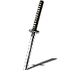
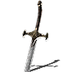
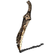
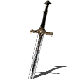
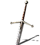
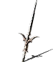
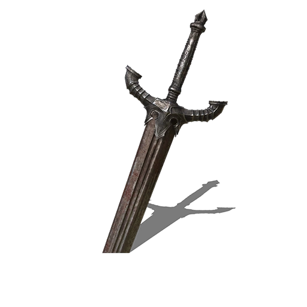
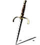

Armas recomendadas
1. Armas rápidas (buenas con destreza)
Uchigatana / Iaito: Excelente velocidad y daño con infusión de fuego o caos. (Aunque tienen una durabilidad baja).

Cimitarra: Rápida y efectiva con piromancia.

Daga de Bandido: Letal para críticos si usas parrys o ataques por la espalda.

2. Armas versátiles (híbrido de fuerza y destreza)
Espada Recta de Astora: Buena para un inicio rápido si tienes Fe baja. (No es muy buena para la mitad del juego, pero está puesta porque se puede conseguir pronto y mejorar al máximo rápidamente, deja de usarla después ya que no hará nada de daño).

Claymore (Caos o Fuego): Gran alcance y buen equilibrio entre velocidad y daño.

Lanza Caballero Plateado: Opción sólida si quieres mantener distancia.

3. Armas pesadas (más fuerza, pero efectivas)
Espada de Caballero Negro: Golpes brutales y buen escalado sin necesidad de mejoras. (Deberás tener mucha suerte para conseguirla y ser muy bueno para matar al Caballero Negro, que no reaparece).

Mano Izquierda: Un Escudo Pequeño o Daga de Parada: Si te gusta jugar con parrys.

Mejor infusión para piromante
Fuego o Caos Como la piromancia no escala con INT o FE, el daño elemental puro es mejor.
Caos (con humanidad alta) Aumenta el daño con más humanidad (hasta 10).